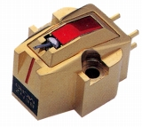
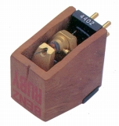
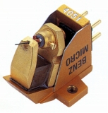
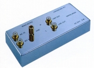

BENZ MICRO（ベンツ・マイクロ）
1995年に日本に紹介されたスイスのカートリッジブランド。現在ではすっかり高性能カートリッジの一角を占めるようになっている。なおスイスのブランドだが、設計はスイス、製造は日本のメーカーとのことである。代理店はユキム。
＊この記述は2000年頃の文献に基き、記載しています。
�T.カートリッジ
上位機種はブライヤーのボディを持つ。


(左 MC Gold 右 Ruby)MC Gold MC Silver L0.4 Reference Ruby

(Glider)
�U.イコライザーアンプ
自社のカートリッジがすべてMC型の為、62dBというハイ・ゲインのMC型用イコライザーアンプ。

(PP-1)